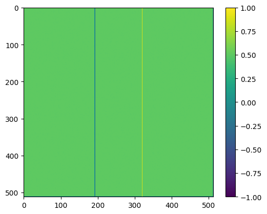
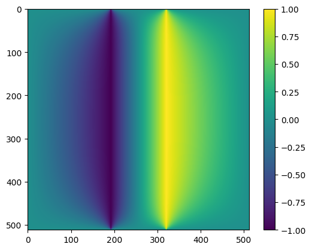
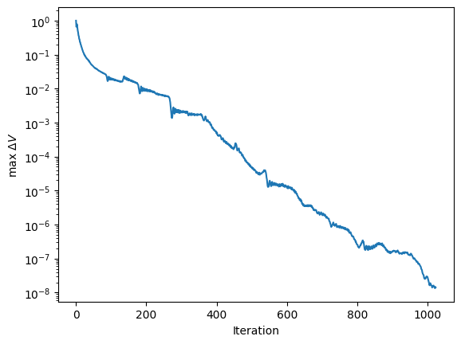

Conjugate gradient solutions#
import numpy as np
import matplotlib.pyplot as plt
Try out the conjugate gradient method#
def conjgrad(A, b, x = None, niter = 20):
# Find a solution to Ax=b
# If there is no initial guess, create one
if x is None:
x = 0*b
# Calculate first residual r_0 and set p_0 equal to it
r = b - A@x
p = r.copy()
# Keep track of the size of the residual and
# exit early if it gets small enough
rr = r@r
for i in range(niter):
Ap = A@p
pAp = p@Ap
alpha = rr / pAp
x = x + alpha*p
r = r - alpha*Ap
rr_new = r@r
beta = rr_new / rr
p = r + beta*p
rr = rr_new
print('Iteration %d: pAp = %lg, residual=%lg' % (i, pAp, rr**0.5))
return x
n = 1000
A = np.random.rand(n,n)
A = A@A.T
# Adding a diagonal component reduces the range of singular values, converges faster
A = A + np.diag(n * np.ones(n))
print('Matrix condition number =', np.linalg.cond(A))
b = np.random.randn(n)
x = conjgrad(A, b, niter = 20)
print('Max error = ', np.max(np.abs(b-A@x)))
Matrix condition number = 250.8915003425017
Iteration 0: pAp = 1.13936e+06, residual=6.56868
Iteration 1: pAp = 9.27902e+06, residual=2.67286
Iteration 2: pAp = 9649.99, residual=0.176845
Iteration 3: pAp = 36.1772, residual=0.0125515
Iteration 4: pAp = 0.182107, residual=0.000855519
Iteration 5: pAp = 0.000844406, residual=5.78143e-05
Iteration 6: pAp = 4.10886e-06, residual=0.000207367
Iteration 7: pAp = 0.0101015, residual=4.09726e-06
Iteration 8: pAp = 1.95869e-08, residual=2.87338e-07
Iteration 9: pAp = 9.54558e-11, residual=2.11149e-08
Iteration 10: pAp = 5.17739e-13, residual=1.49611e-09
Iteration 11: pAp = 2.58519e-15, residual=4.11621e-10
Iteration 12: pAp = 3.98268e-14, residual=1.06282e-10
Iteration 13: pAp = 1.39103e-17, residual=6.96533e-12
Iteration 14: pAp = 5.60639e-20, residual=4.98856e-13
Iteration 15: pAp = 2.88509e-22, residual=3.60069e-14
Iteration 16: pAp = 1.50349e-24, residual=2.74102e-15
Iteration 17: pAp = 2.53536e-25, residual=6.83273e-15
Iteration 18: pAp = 4.02046e-25, residual=1.81249e-16
Iteration 19: pAp = 3.82e-29, residual=1.27527e-17
Max error = 1.3322676295501878e-14
Application to Laplace’s equation#
def set_bcs(n):
# Create a mask to set the boundary points
# (following https://github.com/sievers/phys512-2022/tree/master/pdes )
mask = np.zeros([n,n],dtype='bool')
x = np.linspace(-1,1,n)
xsqr = np.outer(x**2,np.ones(n))
rsqr = xsqr+xsqr.T
R = 0.1
mask[rsqr<R**2] = True
mask[:,0] = True
mask[0,:] = True
mask[-1,:] = True
mask[:,-1] = True
bc = np.zeros([n,n])
bc[mask] = 0.0
bc[rsqr<R**2] = 1.0
return mask, bc
def set_bcs_capacitor(n):
mask = np.zeros([n,n],dtype='bool')
x1 = 3*n//8
x2 = n-x1
mask[:, x2] = True
mask[:, x1] = True
bc = np.zeros([n,n])
bc[:, x2] = 1.0
bc[:, x1] = -1.0
mask[:,0] = True
mask[0,:] = True
mask[-1,:] = True
mask[:,-1] = True
return mask, bc
def conjgrad_laplace(x, b, n, mask, niter = 20):
# Find a solution to Ax=b
# Calculate first residual r_0 and set p_0 equal to it
r = b - Ax(x, n, mask)
p = r.copy()
rr = r@r
delta_x = np.zeros(niter)
for i in range(niter):
Ap = Ax(p, n, mask)
pAp = p@Ap
alpha = rr / pAp
x = x + alpha*p
r = r - alpha*Ap
# keep track of how much x changes as a measure of convergence
delta_x[i] = np.max(np.abs(alpha*p))
rr_new = r@r
beta = rr_new / rr
p = r + beta*p
rr = rr_new
if i%(niter//10) == 0:
print('Iteration %d: pAp = %lg, residual=%lg' % (1+i, pAp, rr**0.5))
if i%(niter//10):
print('Iteration %d: pAp = %lg, residual=%lg' % (1+i, pAp, rr**0.5))
return x, delta_x
def Ax(x, n, mask):
V = x.copy()
V = V.reshape((n,n))
# We set the boundary values to zero so that boundary points do not contribute to the
# averaging. This is taken care of by the b vector
V[mask] = 0
Vnew = V - 0.25 * (np.roll(V,1,0) + np.roll(V,-1,0) +
np.roll(V,1,1) + np.roll(V,-1,1))
Vnew[mask] = 0
Vnew = Vnew.reshape(n*n)
return Vnew
# Solve Laplace's equation with conjugate gradient
n = 512
mask, bc = set_bcs_capacitor(n)
#mask, bc = set_bcs(n)
# Initial guess for the potential
V = np.zeros([n,n]) + 0.5
V[mask] = bc[mask]
plt.imshow(V)
plt.colorbar()
plt.show()
# The matrix bc has zeros in the interior points and the boundary condition
# values in the boundary points. We calculate the part of the averaging
# that includes the boundary separately and then move it onto the right hand side
# as our b vector
b = 0.25 * (np.roll(bc,1,axis=0)+np.roll(bc,-1,axis=0)+
np.roll(bc,1,axis=1)+np.roll(bc,-1,axis=1))
b[mask] = 0
b = b.reshape(n*n)
# This is the initial guess for the potential
x = V.reshape(n*n)
# Solve and then reshape into a 2D grid
x, delta_x = conjgrad_laplace(x, b, n, mask, niter = 2*n)
V = x.reshape((n,n))
plt.clf()
plt.imshow(V)
plt.colorbar()
plt.show()
plt.clf()
plt.plot(np.arange(len(delta_x)), delta_x)
plt.ylabel(r'max $\Delta V$')
plt.xlabel(r'Iteration')
plt.yscale('log')
#plt.xscale('log')
plt.show()



Iteration 1: pAp = 96, residual=6.92695
Iteration 103: pAp = 0.0158729, residual=0.169523
Iteration 205: pAp = 0.00236602, residual=0.0700791
Iteration 307: pAp = 0.000195086, residual=0.0210845
Iteration 409: pAp = 8.01209e-06, residual=0.00424184
Iteration 511: pAp = 9.59754e-08, residual=0.000430214
Iteration 613: pAp = 4.20298e-09, residual=8.51102e-05
Iteration 715: pAp = 1.85836e-10, residual=1.84348e-05
Iteration 817: pAp = 4.72007e-12, residual=2.89834e-06
Iteration 919: pAp = 9.69988e-13, residual=1.32976e-06
Iteration 1021: pAp = 1.58396e-14, residual=1.64154e-07
Iteration 1024: pAp = 1.46728e-14, residual=1.57431e-07
The convergence is exponential.